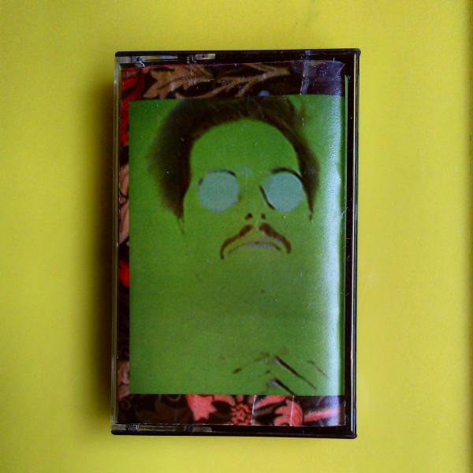
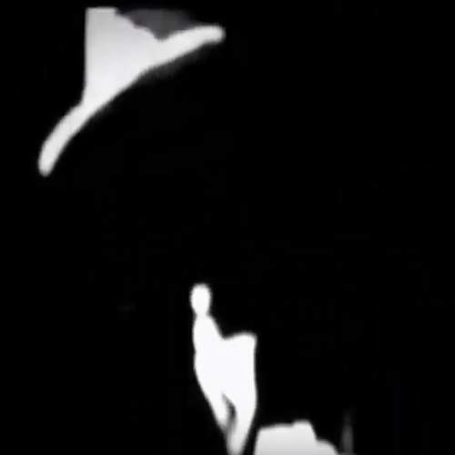

2013
<a href="http://morerecords.bandcamp.com/album/black-medicine-ost">black medicine OST by RICK WEAVER</a>

<a href="http://dinnermusic.bandcamp.com/album/the-perfect-man">The Perfect Man by Rick Weaver</a>
<a href="http://decoherence.bandcamp.com/album/the-two-benjis">The Two Benji's by Form A Log</a>
<a href="http://formalog.bandcamp.com/album/lap-top">Lap Top by Form a Log</a>
